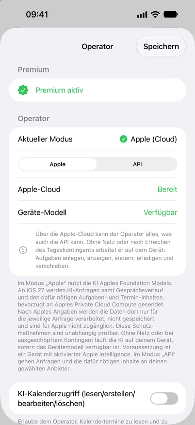

AI setup
Three ways – you decide where your requests are processed.
- On-device Apple AIFor compatible devices with Apple Intelligence.
- Your own API keyFor larger models from a provider of your choice.
- Local serverFor a model on your Mac or server at home.
On-device Apple AI
M-Projekt uses Apple Intelligence for on-device AI processing.
Step 1: Turn on Apple Intelligence in iOS Settings under “Apple Intelligence & Siri”.
Step 2: In M-Projekt, open Settings › AI assistant.
Step 3: Choose the “Apple” mode. Done – suggestions appear in Today and the Inbox.
Requires a device with Apple Intelligence and iOS 27.

Your own API key
Use a model from a provider where you have an account. Choose a preset such as OpenAI, Anthropic or Google Gemini, or enter your own OpenAI-compatible endpoint.
Step 1: Settings › AI assistant › “Custom API” mode.
Step 2: Enter the address (starting with https://) and paste your API key. The app stores the key in your keychain. If iCloud Keychain is enabled, it can sync across your devices.
Step 3: Tap “Load models” and pick a model.
Step 4: “Test connection”. M-Projekt asks for your consent before first sending your content to an external provider.
Your provider may charge its own fees. The app stores your chat history locally.

Local server
Run a model yourself, for example with Ollama or LM Studio on a Mac on the same network.
Step 1: On the server, start a model that offers an OpenAI-compatible API (Ollama: port 11434, path /v1).
Step 2: In M-Projekt, choose Settings › AI assistant › “Custom API” and enter the address, e.g. http://mac-mini.local:11434/v1. A key is usually not needed.
Step 3: Allow local network access when iOS asks.
Step 4: “Load models”, pick a model, “Test connection”.
Your data never leaves your home network.

Consent per address and purpose
The dialog shows the recipient address, the purpose and the content M-Projekt sends. You can withdraw consent in Settings. See the privacy policy for details.